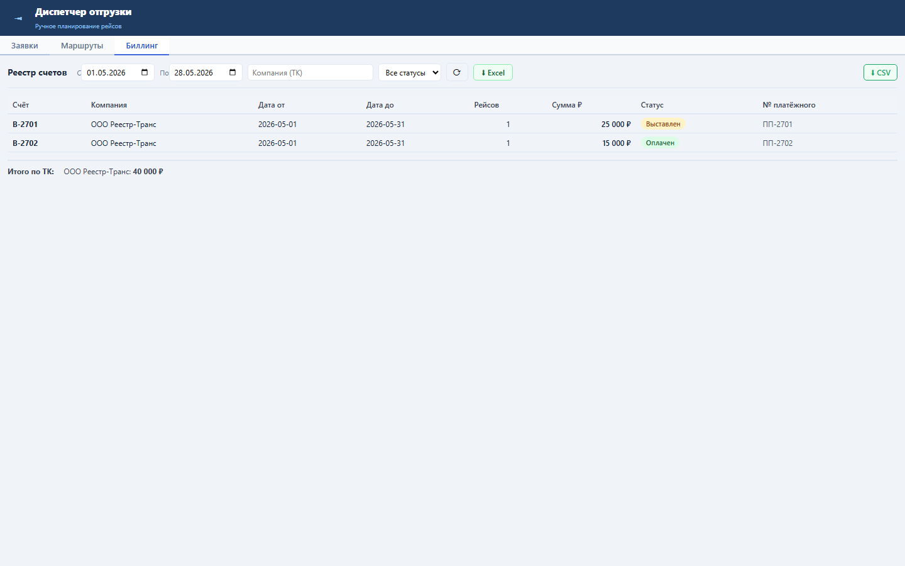

Блок выгружает текущий отфильтрованный реестр счетов в XLSX.
Экспорт использует те же фильтры, что и реестр: компания, период, статус, признак оплаты. XLSX содержит номер счёта, компанию, период, число рейсов, сумму, статус и номер платёжного поручения.
Оператор получает файл для бухгалтерии или управленческой сверки по всем счетам.

Проверка: functional, UI smoke и load gates пройдены.